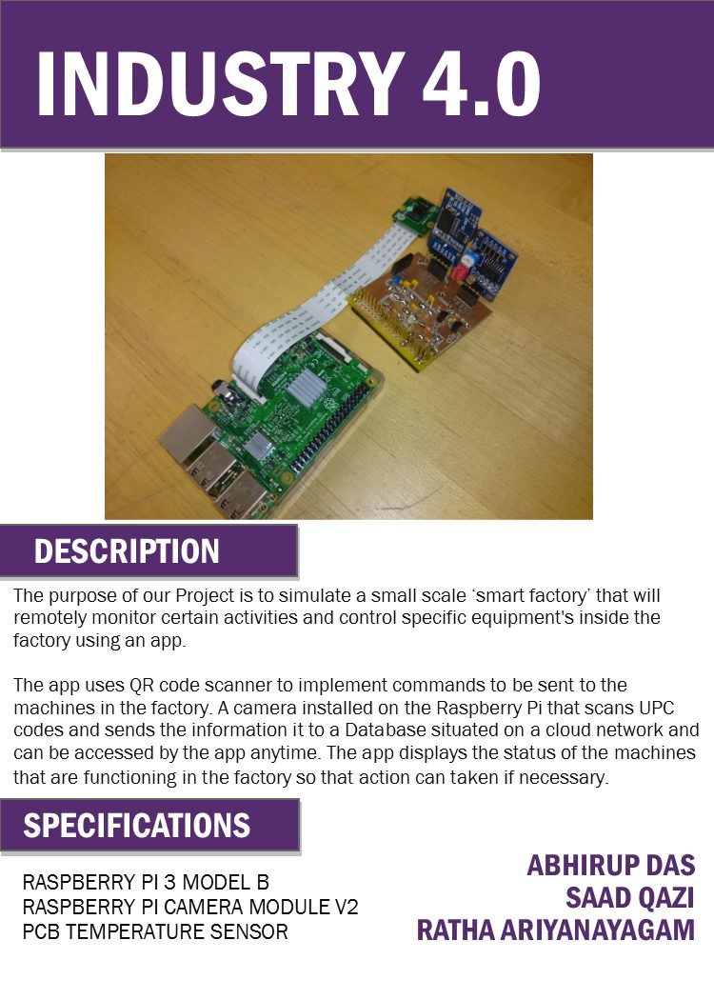
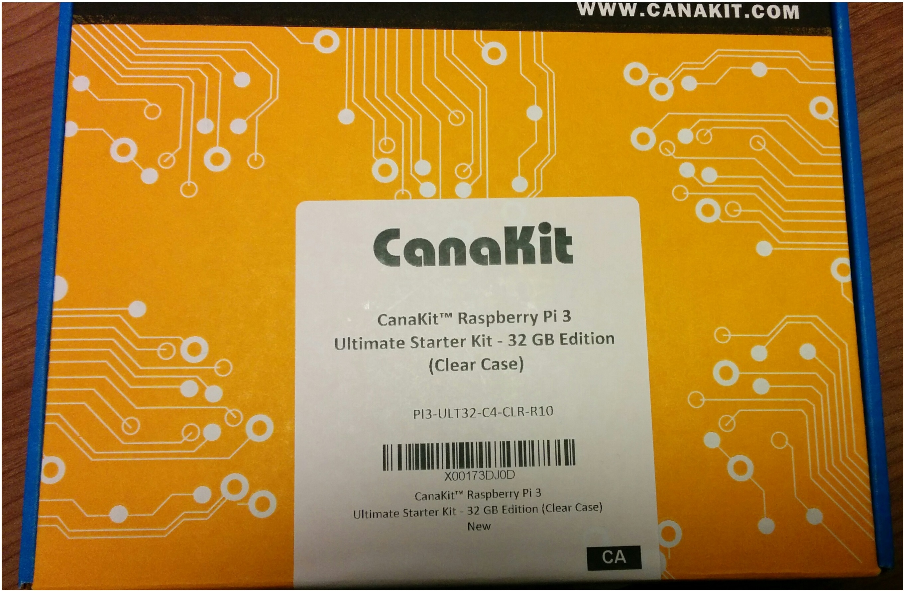
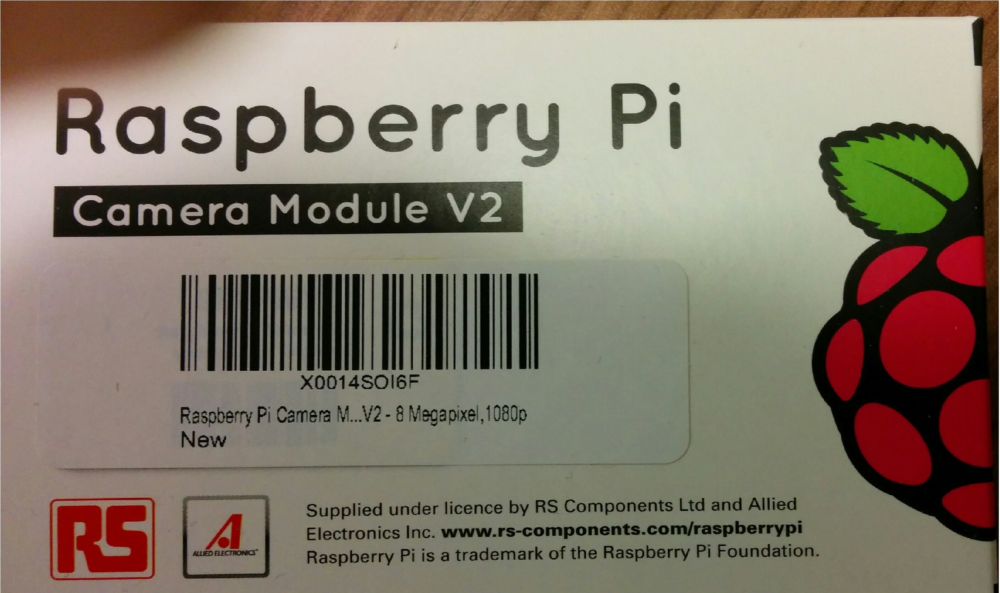
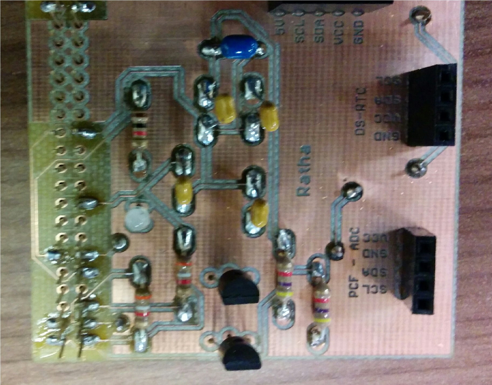

Week 8
Placard: Industry 4.0
-
Click here

Week 6
Progress Report:
- Mechanical assembly of hardware components are being done. The hardware components have been acquired also the PCB has been soldered and tested. The are still many things we need to do like making the case for the camera, connecting the camera and PCB to the Raspberry pi.
- The current problem that is arising is on how to link the hardware to the cloud services. We are still working on it to figure it out
- Another problem was buying the camera because when I first bought the camera i bought the wrong on so i had to cancel it and by the right camera.
- The cost of the part was more than estimated. It was $151.30 for the Rasberry pi, $64.47 for the camera and the PCB was given to us be the school so we didn't have to pay for it.
- the total cost in the end was $215.77.
- some web that will help me are:
- Hardware
- Raspberry Pi 3 Model B with Wi-Fi and Bluetooth technology
- Raspberry Pi Camera Module Version-2 with 8Megapixels sensor
- Temperature sensor solder on PCB   
- Budget:
- Project Schedule Due Get Schedule
- Start off by watching some soldering video
- Project Proposal Due
- Parts Kit. Safety including safety glasses, how to handle hazardous materials, be aware of your surroundings and other things
- Install EAGLE software to make the files for the PCB circuit board and sent to be made
- Create a repository for Hardware Project(CENG317) on GitHUb after making an account
- Quiz on part in a box
- Demonstrated the LED to blink on the Raspberry Pi (incomplete)
- make group for project
- Week 5 Progress Report Due (including proof of order)
- Week 6 Progress Report Due
- Week 7 PCB Due
- Week 8 Placard Due
- Week 9 Progress Report Due
- Week 10 Progress Report Due
- Week 11 Progress Report Due
- Week 12 Progress Report Due
- Week 13 Presentation Due
- Week 14 Build Instructions Due
- Week 15 30 Second Script Due
- http://www.openscad.org/downloads.html
- http://www.w3schools.com/html/html_lists.asp
- Introduction
- Software Requirements Specification
- Declaration of Authourship
- References: APA format
- Open House
- Presentations
- QR scanner info
Week 5
Week 4

Week 3
Week 2
Week 1